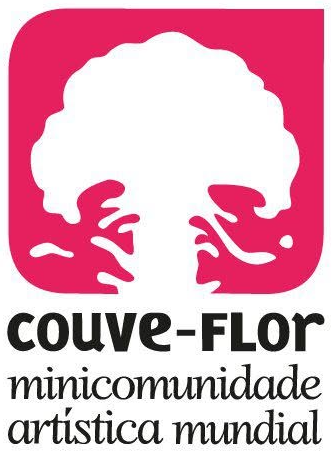
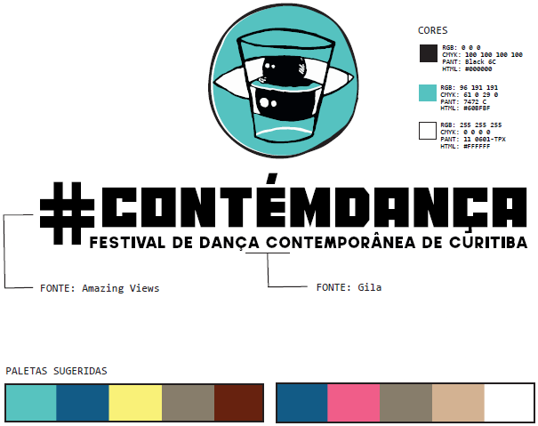
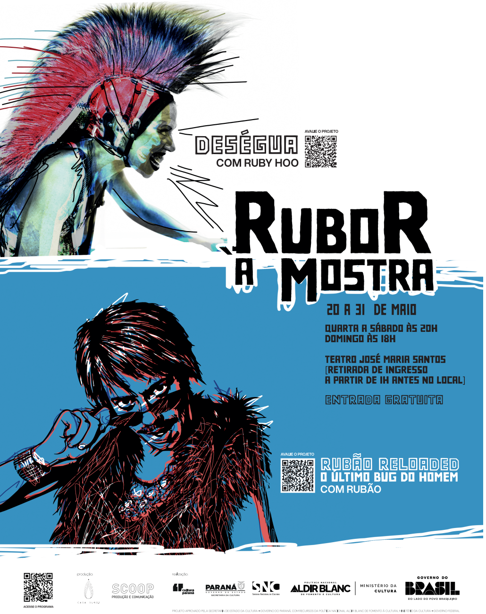

Design
Também trabalhei no meio publicitário e editorial, com design gráfico. No meio artístico, isso me deu a possibilidade de pensar a arte gráfica como parte integrante de um processo de criação.
Entendo o design não só como um meio para vender um produto, mediar a comunicação entre algo e um público, mas também, no caso de um projeto artístico, uma forma de olhar para o que se está criando sob uma perspectiva gráfica.



33